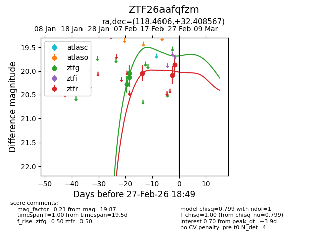
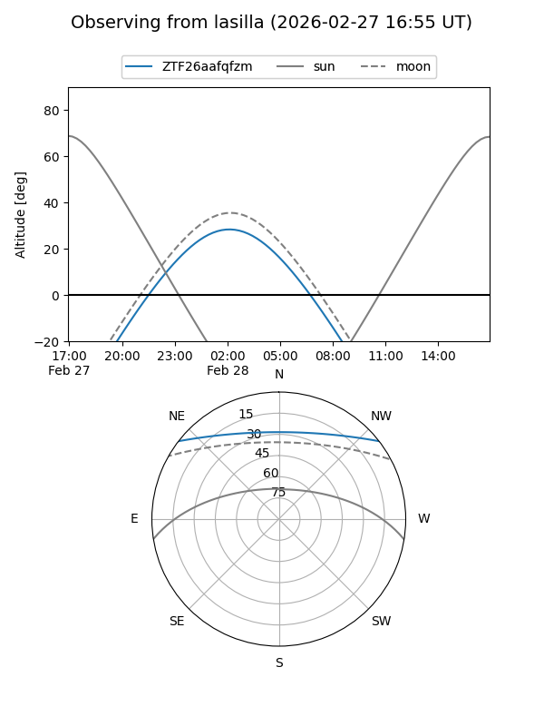
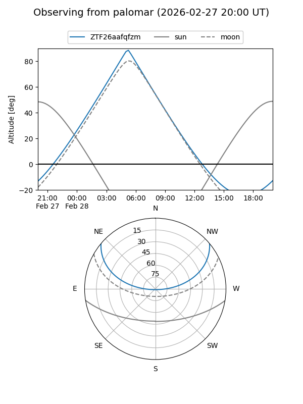
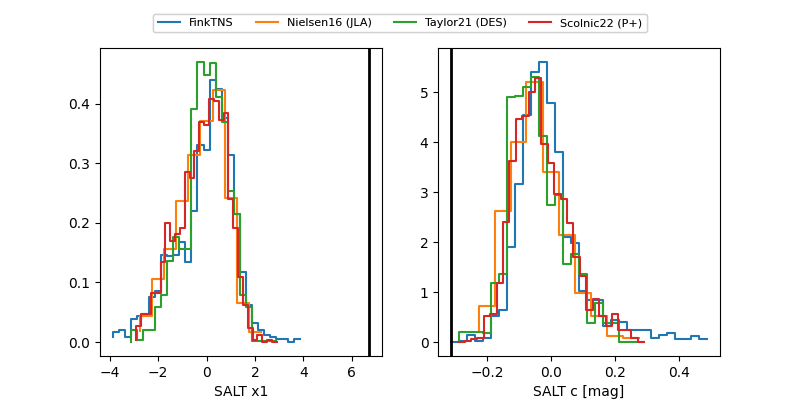

ZTF26aafqfzm
Target ZTF26aafqfzm at 2026-02-27 18:51
Aliases and brokers:
FINK: link
Lasair: link
ALeRCE: link
alt names
ZTF26aafqfzm (ztf,fink_ztf)
Coordinates:
equatorial (ra, dec) = 118.4606,+32.40857
equatorial (HMS+DMS) = 07:53:50.54,+32:24:30.84
galactic (l, b) = (188.2636,+26.51666)
Flags:
Photometry:
last ztfg=20.13, ztfr=19.87
3 ztfg, 3 ztfr detections
Lightcurve

Visibility


Additional plots
